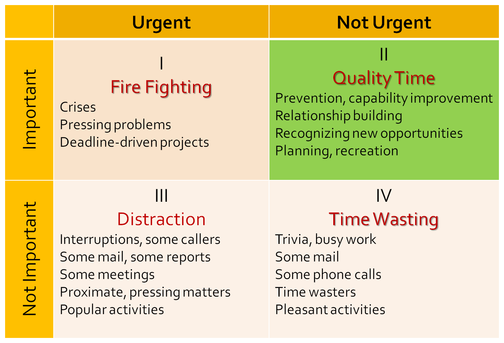
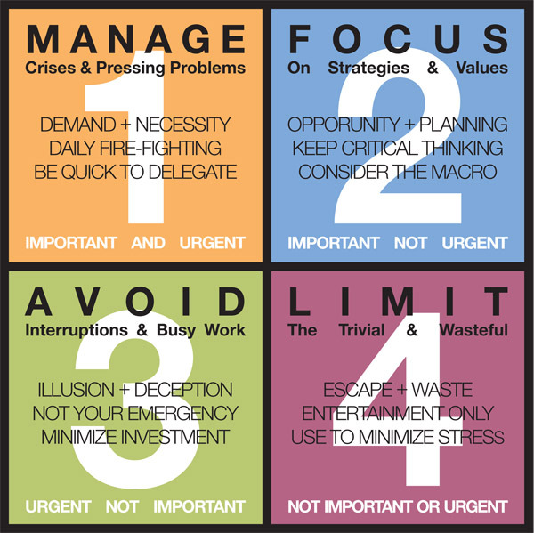
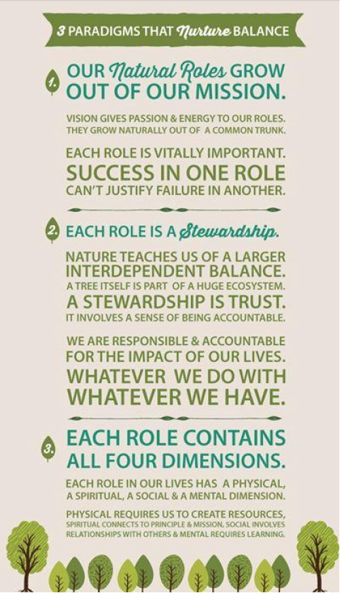
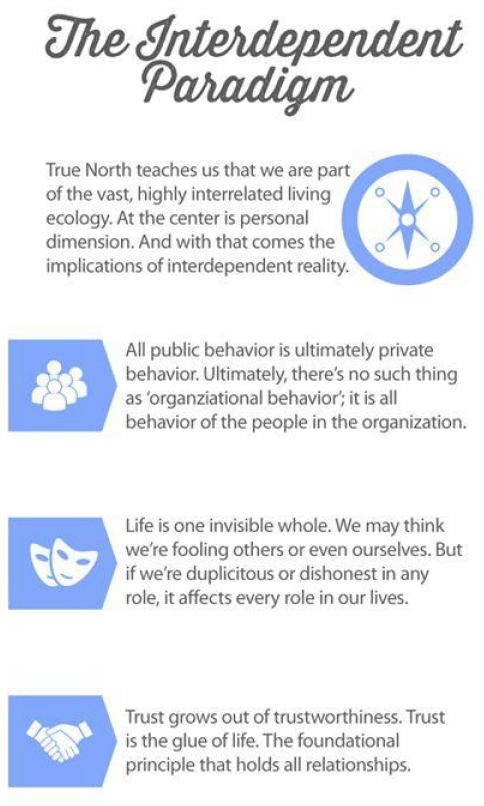

Compass vs. clock
-
The clock represents our commitments, appointments, schedules, goals, activities what we do with, and how we manage our time.
-
The compass represents our vision, values, principles, mission, conscience, direction what we feel is important and how we lead our lives.
-
Focus on where you're headed rather than how fast you're going. (Compass vs. clock)
-
We live in a modern society that loves shortcut techniques. Yet quality of life cannot be achieved by taking the right shortcut. Consequences:
-
Can't seem to walk our talk
-
Always in fire-fighting mode and never making time to do what we know would make a difference.
-
Feeling so guilty over what we are not doing, we can't enjoy what we do
-
For many of us, there's a gap between the compass and the clock between what's deeply important to us and the way we spend our time. And this gap is not closed by the traditional time management approach of doing more things faster. In fact, many of us find that increasing our speed only makes things worse.
Fundamental to putting first things first in our lives is leadership before management: "Am I doing the right things?" before "Am I doing things right?"
If we keep doing what we're doing, we're going to keep getting what we're getting. One definition of insanity is "to keep doing the same things and expect different results."
URGENCY ADDICTION
Some of us get so used to the adrenaline rush of handling crises that we become dependent on it for a sense of excitement and energy. How does urgency feel? Stressful? Pressured? Tense? Exhausting? Sure. But let's be honest. It's also sometimes exhilarating. We feel useful. We feel successful. We feel validated. And we get good at it. It brings instant results and instant gratification.
We get a temporary high from solving urgent and important crises. Then when the importance isn't there, the urgency fix is so powerful we are drawn to do anything urgent, just to stay in motion. People expect us to be busy, overworked. It's become a status symbol in our society if we're busy, we're important; if we're not busy, we're almost embarrassed to admit it. Busyness is where we get our security. It's validating, popular, and pleasing. It's also a good excuse for not dealing with the more important things.
Quadrants


-
Quadrant I (Production): represents things that are both urgent and important. Here's where we:
-
handle an irate client
-
meet a deadline
-
repair a broken down machine
-
undergo heart surgery
-
Help a crying child who has been hurt.
-
We need to spend time in Quadrant I. This is where we manage, where we produce, where we bring our experience and judgment to bear in responding too many needs and challenges. If we ignore it, we become buried alive. But we also need to realize that many important activities become urgent through procrastination, or because we don't do enough prevention and planning.
-
Quadrant II (Increase production capacity): includes activities that are important, but not urgent. This is the Quadrant of Quality. Here's where we:
-
do our long-range planning
-
anticipate and prevent problems
-
empower others
-
broaden our minds
-
increase our skills through reading and continuous professional development
-
envision how we're going to help a struggling son or daughter
-
prepare for important meetings and presentations
-
invest in relationships through deep, honest listening
-
Increasing time spent in this quadrant increases our ability to do. Ignoring this quadrant feeds and enlarges Quadrant I, creating stress, burnout, and deeper crises for the person consumed by it. On the other hand, investing in this quadrant shrinks Quadrant I. Planning, preparation, and prevention keep many things from becoming urgent. Quadrant II does not act on us; we must act on it. This is the Quadrant of personal leadership.
-
Quadrant III: is almost the phantom of Quadrant I. It includes things that are urgent, but not important. This is the Quadrant of Deception. The noise of urgency creates the illusion of importance. But the actual activities, if they're important at all, are only important to someone else. Many phone calls, meetings, and drop-in visitors fall into this category. We spend a lot of time in Quadrant III meeting other people's priorities and expectations, thinking we're really in Quadrant I.
-
Quadrant IV: is reserved for those activities that are not urgent and not important. We get so battle-scarred from being tossed around in Quadrants I and III that we often escape to Quadrant IV for survival. What kinds of things are in Quadrant IV?
-
Not necessarily recreational things, because recreation in the true sense of recreation is a valuable Quadrant II activity.
-
reading addictive light novels
-
habitually watching mindless television shows
-
gossiping around the water fountain
-
Quadrant IV is not survival; it's deterioration. It may have an initial cotton candy feel, but we quickly find there's nothing there.
Why does one not spend more time on Quadrant II activities?
Because they're not urgent. They aren't pressing. They don't act on you. You have to act on them.
When we operate out of the importance paradigm, we live in Quadrants I and II. We're out of Quadrants III and IV, and as we spend more time in preparation, prevention, planning, and empowerment, we decrease the amount of time we spend putting out fires in Quadrant I. Even the nature of Quadrant I changes. Most of the time, we're there by choice rather than default. We may even choose to make something urgent or timely because it's important.
How to determine what is important?
At the heart of the fourth generation are three fundamental ideas that empower us to answer that question:
-
The fulfillment of the four human needs and capacities
-
The reality of true north principles
-
The potentiality of the four human endowments
The fulfillment of the four human needs and capacities
To Live, to Love, to Learn, to Leave a Legacy
-
The need to live is our physical need for such things as food, clothing, shelter, economic well-being, health.
-
The need to love is our social need to relate to other people, to belong, to love, to be loved.
-
The need to learn is our mental need to develop and to grow.
-
The need to leave a legacy is our spiritual need to have a sense of meaning, purpose, personal congruence, and contribution.
Each of these needs is vitally important. Any one of these needs, unmet, reduces quality of life. These needs are real and deep and highly interrelated. Some of us recognize that we have these needs, but we tend to see them as separate compartments of life. We think of balance as running from one area to another fast enough to spend time in each one on a regular basis. But the touching bases paradigm ignores the reality of their powerful synergy. It's where these four needs overlap that we find true inner balance, deep fulfillment, and joy.
The key to the fire within is our spiritual need to leave a legacy. It transforms other needs into capacities for contribution.
Only as we focus more on contributing than consuming can we create the context that makes peace in all aspects of life possible. It's in leaving a legacy that we find meaning in living, loving, and learning.
The reality of true north principles
As important as the needs are to fulfill, is the way we seek to fulfill them. Our ability to create quality of life is a function of the degree to which our lives are aligned with extrinsic realities as we seek to fulfill the basic human needs.
The reality of true north gives context and meaning to where we are, where we want to go, and how to get there. "True north" in the human dimension is an inner compass that empowers us to align our lives with it.
Principles
Principles are neither practices nor values but they are at higher level. If we understand and live our lives based on principles, we can quickly adapt; we can apply them anywhere. By teaching our children principles instead of practices, or teaching them the principles behind the practices, we better prepare them to handle the unknown challenges of the future. To understand the application may be to meet the challenge of the moment, but to understand the principle is to meet the challenge of the moment more effectively and to be empowered to meet a thousand challenges of the future as well.
Law of the farm
In agriculture, we can easily see and agree that natural laws and principles govern the work and determine the harvest. But in social and corporate cultures, we somehow think we can dismiss natural processes, cheat the system, and still win the day.
In the short run, we may be able to go for the "quick fix" with apparent success. We can make impressions, we can put on the charm. We can learn manipulative techniques what lever to pull, what button to push to get the desired reaction. But long-term, the Law of the Farm governs in all areas of life. And there's no way to fake the harvest.
The problems in life come when we're sowing one thing and expecting to reap something entirely different.
The potentiality of the four human endowments
As human beings, we have unique endowments that distinguish us from the animal world. These endowments reside in that space between stimulus and response, between those things that happen to us and our response to them.
"Between stimulus and response, there is a space.
In that space is our power to choose our response.
In our response lies our growth and our freedom. "
The endowments that reside in this space self-awareness, conscience, creative imagination, and independent will create our ultimate human freedom: the power to choose, to respond, and to change. They create the compass that empowers us to align our lives with true north.
Self-awareness...
Self-awareness is our capacity to stand apart from ourselves and examine our thinking, our motives, our history, our scripts, our actions, and our habits and tendencies. It enables us to take off our glasses and look at them as well as through them. It makes it possible for us to become aware of the social and psychic history of the programs that are in us and to enlarge the separation between stimulus and response.
Conscience
Conscience connects us with the wisdom of the ages and the wisdom of the heart. It's our internal guidance system, which allows us to sense when we act or even contemplate acting in a way that's contrary to principle. It also gives us a sense of our unique gifts and mission.
Independent will
Independent will is our capacity to act. It gives us the power to transcend our paradigms, to swim upstream, to rewrite our scripts, to act based on principle rather than reacting based on emotion or circumstance. While environmental or genetic influences may be very powerful, they do not control us. We're not victims. We're not the product of our past. We are the product of our choices. We are "response-able" able to respond, to choose beyond our moods and tendencies. We have will power to act on self-awareness, conscience, and vision.
Creative imagination
Creative imagination is the power to envision a future state, to create something in our mind, and to solve problems synergistically. It's the endowment that enables us to see ourselves and others differently and better than we are now. It enables us to write a personal mission statement, set a goal, or plan a meeting. It also empowers us to visualize ourselves living our mission statement even in the most challenging circumstances, and to apply principles ineffective ways in new situations.
The development of each of the four endowments and the synergy between them is the core of personal leadership.
How to develop your endowments
Our lives are the results of our choices. To blame and accuse other people, the environment, or other extrinsic factors is to choose to empower those things to control us.
-
Nurture Self-awareness by Keeping a Personal Journal
-
Educate the Conscience by Learning, Listening, and Responding
-
reading and pondering over the wisdom literature of the ages to broaden our awareness of the true north principles that run as common themes throughout time
-
standing apart from and learning from our own experience
-
carefully observing the experience of others
-
taking time to be still and listen to that deep inner voice
-
Responding to that voice. Disobedience to conscience makes conscience blind.
-
-
Nurture Independent Will by Making and Keeping Promises
-
Each time we do this, we make deposits in our Personal Integrity Account.
-
Don't violate that commitment and be sure you don't overpromise and underdeliver. Build slowly until your sense of honor becomes greater than your moods. Think carefully about the full reality you're in, and based on that careful thought, move into it and say, "I will do this." And then, no matter what, do it.
-
Little by little, your faith in yourself will increase. And if the thing you've committed to do is principle-centered, you gradually become a little more principle-centered. Little by little we increase our strength until our ability to act is more powerful than any of the forces that act upon us.
-
-
Develop Creative Imagination through Visualization
-
Set aside some time to be alone, away from interruptions. Close your eyes and visualize
-
The best way to predict your future is to create it.
-
Quadrant II organizing process: the process of putting 1^st^ things 1^st^
A thirty-minute weekly process and tool that will empower you to create quality of life based on needs, principles, and endowments.
Principles empower us with an abundance mentality. There's more of everything. We can think win-win with all the roles in our lives, to see them as parts of a highly interrelated whole.
STEP ONE: CONNECT WITH YOUR VISION AND MISSION
As you begin to organize for the coming week, the first step is to connect with what's most important in your life as a whole. Context gives meaning. Consider the big picture what you care about, what makes the moments in your life meaningful. The key to this connection lies in the clarity of your vision around such questions as:
http://msb.franklincovey.com/ (mission statement builder)
-
What's most important?
-
What gives your life meaning?
-
What do you want to be and to do in your life?
STEP TWO: IDENTIFY YOUR ROLES
We live our lives in terms of roles not in the sense of role playing, but in the sense of authentic parts we've chosen to fill. We may have important roles at work, in the family, in the community, or in other areas of life. Roles represent responsibilities, relationships, and areas of contribution.
Much of our pain in life comes from the sense that we're succeeding in one role at the expense of other, possibly even more important roles. We may be doing great as vice president of the company, but not doing well at all as a parent or spouse.
A clear set of roles provides a natural framework to create order and balance. If you have a mission statement, your roles will grow out of it. Balance among roles does not simply mean that you're spending time in each role, but that these roles work together for the accomplishment of your mission.
Identifying roles gives a sense of the wholeness of quality life that life is more than just a job, or a family, or a particular relationship. It's all of these together. Identifying roles may also highlight "important, but not urgent" areas that are currently being neglected.
In addition to the roles you've identified, we'd like to suggest a separate and foundational role called "sharpen the saw". We treat this as a separate role for two reasons: 1) it's a role that everyone has, and 2) it's foundational for success in every other role.
It's also important to realize that all of these roles are not distinct "departments" of life. They form a highly interrelated whole. By identifying your roles, you're not trying to break your life down and fit it into neat little boxes on a planning page. You're creating a variety of perspectives from which to examine your life to ensure balance and harmony. The paradigm is always one of importance, interdependence, and relatedness.
STEP THREE: SELECT QUADRANT II GOALS IN EACH ROLE
What is the most important thing I could do in each role this week to have the greatest positive impact?
STEP FOUR: CREATE A DECISION-MAKING FRAMEWORK FOR THE WEEK
Rocks in a jar metaphor https://www.youtube.com/watch?v=j6m9WnNdpSw
Our Quadrant II goals are like the "big rocks." If we put other activities the water, sand, and gravel in first, and then try to fit the big rocks in, not only will they not fit, we'll end up making a pretty big mess in the process.
But if we know what the big rocks are and put them in first, it's amazing how many of them we can put in and how much of the sand, gravel, and water fits in between the spaces. Regardless of what else actually does fit in, the key point is that the big rocks our Quadrant II goals are in first.
Leave some room because to ignore the unexpected (even if it were possible) would be to live without opportunity, spontaneity, and the rich moments of which life is made.
STEP FIVE: EXERCISE INTEGRITY IN THE MOMENT
STEP SIX: EVALUATE

Planning & goal setting
As people work together to accomplish any task, sooner or later they have to deal with five elements:
-
Desired results: What is it we are trying to do? What outcomes do we want both quantitative and qualitative and by when?
Frustration is essentially a function of expectation. Clarifying interdependent expectations up front does a great deal to contribute to quality of life.
-
Guidelines: What are the parameters within which we are trying to do it? What are the essential values, policies, legalities, ethics, limits, and levels of initiative to be aware of in going after the desired results?
Adapted from William Oncken's work are the following six levels of initiative (match the level of initiative with the capacity of the individual)
1. Wait until told
2. Ask
3. Recommend
4. Act and report immediately
5. Act and report periodically
6. Act on own
-
Resources: What do we have to work with? What budgetary, systemic, and human help is available and how do we access it?
It's important to identify not only the resources available, but also how to access them, how to work with others who use the same resources, and what the limits are.
-
Accountability: How do we measure what we are doing? What criteria will indicate the accomplishment of the desired results? Will they be measurable, observable, or discernible, or some combination of the three? To whom are we accountable? When will the accountability process take place?
-
Consequences: Why are we trying to do it? What are the natural and logical consequences of accomplishing or not accomplishing the desired results?
Win-win
Think Win-Win. You genuinely want the other person to win. You also want to win. You commit to interact until you can come up with a solution you both feel good about.
Seek First to Understand
As you seek mutual understanding, you may find it helpful to address the following questions:
-
What is the problem from the other point of view?
Really listen with intent to understand, not to reply. Step out of your own autobiography. Work at it until you can express the other person's point of view better than he or she can. Then encourage the other person to do the same.
-
What are the key issues (not viewpoints) involved?
Once the viewpoints are expressed and both parties feel thoroughly understood, look at the problem together and identify the issues that need to be resolved.
-
What results would constitute a fully acceptable solution?
Find out what would constitute a win for the other person. Identify what would constitute a win for you. Put both criteria on the table as the foundation for synergistic interaction.
Synergize
Open the door to the discovery of creative third-alternative solutions. Brainstorm. Use your MacGyver mentality. Open your mind. Be prepared for surprise. Try to create a list of possible options that would meet the criteria you've set up.
Trust
Both character and competence are necessary to inspire trust. And both are completely within our Circle of Influence.
Character includes:
-
Integrity - the ability to walk your talk, a thorough integratedness of public, private, and deep inner life around a balanced set of principles
-
Majority - the balance of courage and consideration that enables you to say what needs to be said, to give honest feedback, to address issues in a straightforward way, but with consideration and respect for the feelings, thoughts, and opinions of others
-
Abundance mentality - the paradigm that life is ever expanding, that there are an infinite number of third alternatives (in contrast to the paradigm that life is a zero sum game, that the pie is only so large and if anyone else gets a piece, that means less for me)
Competence:
-
Technical competence - the knowledge and skill to achieve the agreed-upon results; the ability to think through problems and look for new alternatives
-
Conceptual competence -the ability to see the big picture, to examine assumptions and shift perspectives
-
Interdependent competence -the ability to interact effectively with others, including the ability to listen, communicate, get to third alternatives, create win-win agreements, and work toward synergistic solutions; the ability to see and operate effectively and cooperatively in complete organizations and systems
Interdependency

Decision making
Ask with intent
-
How did this activity come about?
-
Why am I doing it now?
-
What are the underlying reasons for the activity?
-
What are the ultimate objectives?
-
Does this activity contribute to the purpose of the organization?
-
Is this the highest and best use of my capacities and our combined resources?
-
Is it within my circle of influence?
Frustration = f(Expectations)
Frustration is essentially a function of unmet expectations we expect something to be a certain way or to produce certain results, and it doesn't. As a result, we feel frustrated.
Many of us expect consciously or subconsciously to be able to go through a day and accomplish what we planned. As a result, when some unexpected challenge comes up, we are frustrated. When someone has a need we didn't anticipate, we are frustrated. We see people essentially as interruptions. We view change as the enemy. Our peace and happiness are a function of whether or not we are able to make it through that day and check off everything on the list.
But what happens when the expectation changes when we see each day as an exciting new adventure for which we have a roadmap, but also a compass that empowers us to navigate through uncharted terrain à when we see problems as opportunities to help others à when we look forward to meeting situations that challenge our priorities, confident that our compass will help us keep moving toward the best? What happens when our peace and happiness are a function of going to bed at night knowing we made the choices to put first things first throughout the day? Does that expectation make a difference in the way we interact with the realities of the day?
Unmet expectations create frustration, but our expectations are within our control. We're not talking about lowering our expectations, but about basing them on the realities of true north. One of the richest areas for eliminating much of the frustration we experience in our lives is to examine our expectations. Whenever we feel frustrated, we can go back to the root of the problem. - What expectation did I have that's been violated?- Was that expectation based on true north?- What should I do to change the expectation?- What can I learn from this that will affect my expectations in the future?